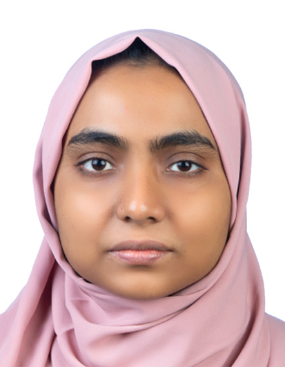

Towards Reliable Bovine Milk Microbiome Analysis for Assessing Mastitis Risk
Comparative evaluation of two DNA extraction methods for bovine milk microbiome profiling, with 16S rRNA sequencing and downstream analysis in MicrobiomeAnalyst.
ACADEMIC PROFILE
Research interests spanning host–microbiome interactions, bioinformatics, animal genomics and precision livestock research.

ABOUT
I am an MSc Dairy Science student at Christian-Albrechts-Universität zu Kiel, Germany. My academic work connects dairy science with microbiome analysis, animal genomics, bioinformatics and quantitative approaches to livestock research.
My current thesis investigates bovine milk microbiome analysis for assessing mastitis risk through a comparative evaluation of two DNA extraction methods, using 16S rRNA sequencing and MicrobiomeAnalyst.
RESEARCH
Comparative evaluation of two DNA extraction methods for bovine milk microbiome profiling, with 16S rRNA sequencing and downstream analysis in MicrobiomeAnalyst.
A precision-nutrition project involving R-based modelling of variation in forage mineral content.
Precision livestock research and data-driven approaches to animal science.
EDUCATION
Christian-Albrechts-Universität zu Kiel, Germany
Erasmus+ exchange at JUNIA ISA, Lille, France · 2025
Eskisehir Osmangazi University, Türkiye
YTB Scholarship · 120 ECTS · GPA 4.0/4.0
Bangladesh Agricultural University, Bangladesh
CGPA 3.728/4.0 · Rank 7/152
SKILLS
PUBLICATIONS
Mohshina, H., & Gedik, Y. In Resilient Agriculture with the Help of Crop Diversification, pp. 143–180. Iksad Publications.
View publication on ResearchGate →Mohshina, H., & Gedik, Y. In Highly Interconnected & Endless Puzzle: Agriculture, pp. 139–156. Iksad Publications.
No direct publication link was supplied.
CONFERENCE PRESENTATIONS & ABSTRACTS
Mohshina, H., & Gedik, Y. EJONS 14th International Conference on Mathematic, Engineering and Natural Sciences, July 6–7, Paris, France. Abstract and oral presentation.
View abstract & presentation →View conference proceedings →Mohshina, H., & Gedik, Y. III. International Applied Statistics Conference (UYIK-2022), June 22–24, Skopje, North Macedonia. Abstract and oral presentation.
View abstract & presentation →View conference proceedings →Mohshina, H., & Gedik, Y. II. International Congress of the Turkish Journal of Agriculture - Food Science and Technology 2021, October 25–29, Gazimagusa, Cyprus. Oral presentation and full text.
View full text →ResearchGate →Conference book →Mohshina, H., & Gedik, Y. II. International Applied Statistics Conference (UYIK-2021), June 29–July 2, Tokat, Türkiye. Abstract and oral presentation.
View abstract & presentation →View conference proceedings →Mohshina, H., & Gedik, Y. Baku Scientific Research Conference, April 28–30, Baku, Azerbaijan. Abstract and oral presentation.
View abstract & presentation →View conference publication →EXPERIENCE
Selected academic and practical experience as detailed in the CV.
CONTACT
For research collaboration, academic opportunities or professional enquiries:
Pinneberg, Germany